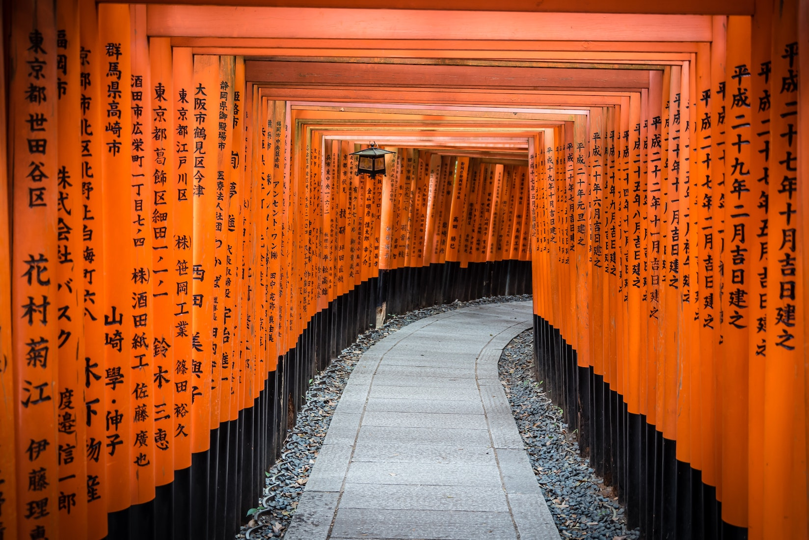

Daigo-ji
Daigo-ji is a Shingon Buddhist temple in Fushimi-ku, Kyoto, Japan. Its main devotion (honzon) is Yakushi. Daigo, literally "ghee", is used figuratively to mean "crème de la crème" and is a metaphor of the most profound part of Buddhist thoughts.

Fusihimi Inari
Fushimi Inari-taisha is the head shrine of the kami Inari, located in Fushimi-ku, Kyoto, Kyoto Prefecture, Japan. The shrine sits at the base of a mountain also named Inari which is 233 metres (764 ft) above sea level, and includes trails up the mountain to many smaller shrines which span 4 kilometres (2.5 mi) and take approximately 2 hours to walk up.

Ryōan-ji
Ryōan-ji (The Temple of the Dragon at Peace) is a Zen temple located in northwest Kyoto, Japan. It belongs to the Myōshin-ji school of the Rinzai branch of Zen Buddhism. The Ryōan-ji garden is considered one of the finest surviving examples of kare-sansui ("dry landscape"),[1] a refined type of Japanese Zen temple garden design generally featuring distinctive larger rock formations arranged amidst a sweep of smooth pebbles (small, carefully selected polished river rocks) raked into linear patterns that facilitate meditation.

Kiyozumi Dera
Kiyomizu-dera is a Buddhist temple located in eastern Kyoto, Japan. Kiyomizu-dera was founded in the early Heian period. The temple was founded in 778 by Sakanoue no Tamuramaro, and its present buildings were constructed in 1633, ordered by Tokugawa Iemitsu.There is not a single nail used in the entire structure.

Kyoto Tower
Kyoto Tower is an observation tower located in Kyoto, Japan. The steel tower is the tallest structure in Kyoto with its observation deck at 100 metres (328 ft) and its spire at 131 metres (430 ft). The 800-ton tower stands atop a 9-story building, which houses a 3-star hotel and several stores. The entire complex stands opposite Kyōto Station.

Nishiki Market
Nishiki Market ("brocade market") is a marketplace in downtown Kyoto, located on the east end of Nishikikōji Street,[1] one block north and parallel to Shijō Street (四条通, Shijō-dōri) and west of Teramachi Street (寺町通, Teramachi-dōri). Rich with history and tradition, the market is renowned as the place to obtain many of Kyoto's famous foods and goods.

Garden Park Imperial Palace
The Tokyo Imperial Palace ('Imperial Residence') is the main residence of the Emperor of Japan. It is a large park-like area located in the Chiyoda district of the Chiyoda ward of Tokyo and contains several buildings including the Fukiage Palace (Fukiage gosho) where the Emperor has his living quarters, the main palace where various ceremonies and receptions take place, some residences of the Imperial Family, an archive, museums and administrative offices.

Osaka Castle
Osaka Castle is a Japanese castle in Chūō-ku, Osaka, Japan. The castle is one of Japan's most famous landmarks and it played a major role in the unification of Japan during the sixteenth century of the Azuchi-Momoyama period.